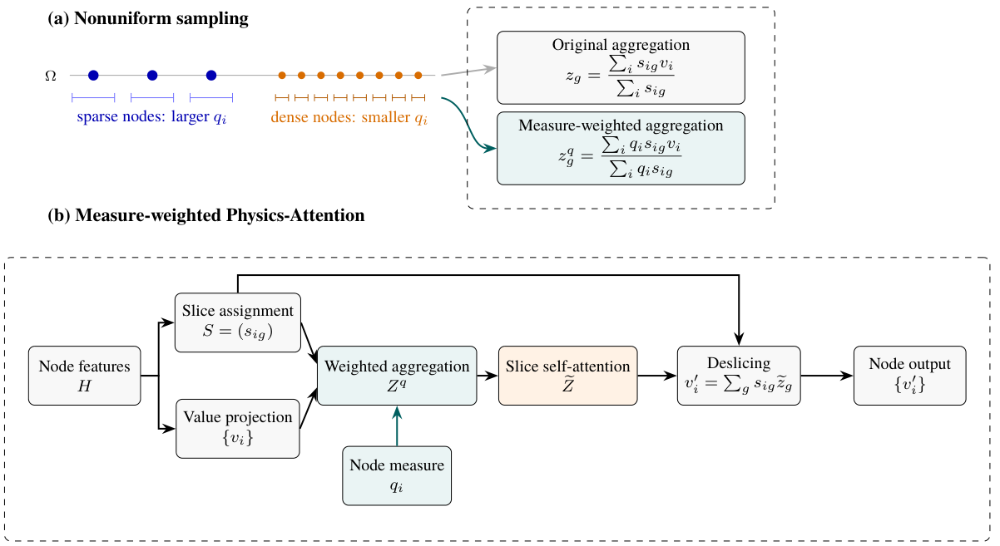
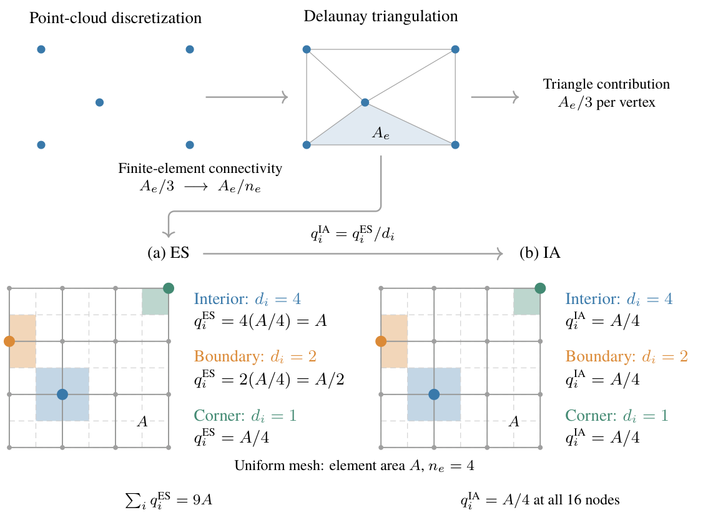

Equal-share nodal measure
Each element distributes its area equally among its nodes. Summing the contributions at each node preserves the total mesh area.
Used as the common area measure for evaluation.
Scientific machine learning · Research project
1 Shanghai Key Laboratory of Mechanics in Energy Engineering, Shanghai Institute of Applied Mathematics and Mechanics, School of Mechanics and Engineering Science, Shanghai University, Shanghai 200072, China.
2 The Institute of Xi'an Aerospace Solid Propulsion Technology, Xi'an 710025, China.
* Correspondence: Youbiao Chu · Bofu Wang
Bringing local mesh-scale information into learned node-to-slice aggregation.

Overview
Nonuniform finite-element meshes give densely sampled regions greater influence in nodal aggregation and error evaluation. Here we investigate nodal-measure-weighted aggregation in Transolver, which compresses nodal features into learned slice representations before applying attention. We construct equal-share and incidence-averaged measures from element areas and connectivity, retaining the area-conserving equal-share measure for evaluation. For stress prediction in variable-geometry shell joints, the incidence-averaged model measure yields lower mean errors than the equal-share alternative, with larger improvements in high-stress regions. Weighting slice aggregation alone reduces mean full-field area-weighted errors for von Mises and maximum principal stress by 4.2% and 3.8%, and high-stress-region errors by 6.1% and 8.3%, while pointwise errors remain largely unchanged. Slice weighting also improves area-weighted accuracy when normalization and loss weighting are enabled. These results support incorporating local mesh-scale information into learned aggregation for stress-field prediction on irregular meshes.
Method
Each element distributes its area equally among its nodes. Summing the contributions at each node preserves the total mesh area.
Used as the common area measure for evaluation.
Dividing the ES measure by the number of incident elements gives the average contribution per incident element, describing the local mesh scale.
Used as the model measure in the pathway ablations.

Experiments
Finite-element solutions are computed on the full axisymmetric shell before extracting the forward-joint learning domain. The network predicts von Mises and maximum principal stress.
ES and IA are compared with weighting enabled in slice aggregation, normalization and the training loss. IA yields lower mean errors, with larger relative improvements in high-stress regions.
| Model measure | von Mises | Maximum principal | ||
|---|---|---|---|---|
| Full field | HSR | Full field | HSR | |
| ES | .02133 ± .00035 | .01631 ± .00010 | .02636 ± .00028 | .01392 ± .00028 |
| IA | .02091 ± .00068 | .01575 ± .00023 | .02606 ± .00073 | .01317 ± .00025 |
The paired comparisons No q → Slice and Norm+Loss → Full isolate the effect of adding slice weighting. Full gives the lowest mean full-field area-weighted errors for both channels; Slice gives the lowest high-stress-region error for von Mises stress.
| Setting | von Mises | Maximum principal | ||
|---|---|---|---|---|
| Full field | HSR | Full field | HSR | |
| No q | .02316 ± .00151 | .01643 ± .00124 | .02772 ± .00151 | .01465 ± .00133 |
| Slice | .02219 ± .00105 | .01543 ± .00068 | .02667 ± .00124 | .01343 ± .00082 |
| Norm+Loss | .02148 ± .00100 | .01612 ± .00057 | .02640 ± .00095 | .01347 ± .00059 |
| Full | .02091 ± .00068 | .01575 ± .00023 | .02606 ± .00073 | .01317 ± .00025 |
Values are means ± sample standard deviations over three training seeds, each evaluated on 642 test cases. All area-weighted evaluations use ES. HSR comprises nodes with reference stress at least 67% of the case maximum for the corresponding channel. Bold indicates the lowest mean in each column within each table. Lower is better.
No q: no nodal weighting. Slice: slice aggregation only. Norm+Loss: input/output normalization and training loss. Full: all three pathways.
Pointwise errors provide a complementary evaluation. Slice leaves mean full-field pointwise errors largely unchanged relative to No q. Relative to Norm+Loss, Full reduces the four mean area-weighted errors by approximately 1.3–2.7%, while the corresponding pointwise errors increase by 0.1–1.0%.
Reproduction
Model implementations, training and evaluation code.
Download links and processing instructions will be added with the dataset release.
Paper-aligned configurations, per-seed metrics and selected model checkpoints.
The tables above summarize the current manuscript. Downloadable experiment artifacts are not yet hosted on this page.